Inst-BrainSim
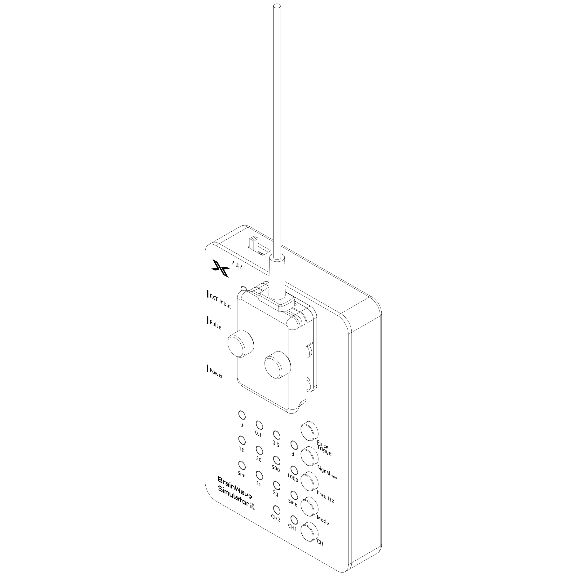
Overview
The BrainWave Simulator is a precision signal-generation platform designed to emulate neural activity for end-to-end validation and calibration of neural acquisition systems—from electrodes and headstages to acquisition platforms (e.g., XDAQ and others) and integrated experimental I/O setups. Its compact form factor, battery-powered operation, and dual-channel programmable outputs provide researchers with a reliable solution for bench-top testing and in-lab system verification—without the need for live tissue samples or biological inputs.
As part of our continuous product enhancement strategy, the BrainWave Simulator has been refined to incorporate expanded signal source options, improved electrical integration, and streamlined control features. These improvements are evolutionary rather than disruptive, ensuring that all devices retain full compatibility with existing workflows while extending their applicability to more advanced experimental paradigms.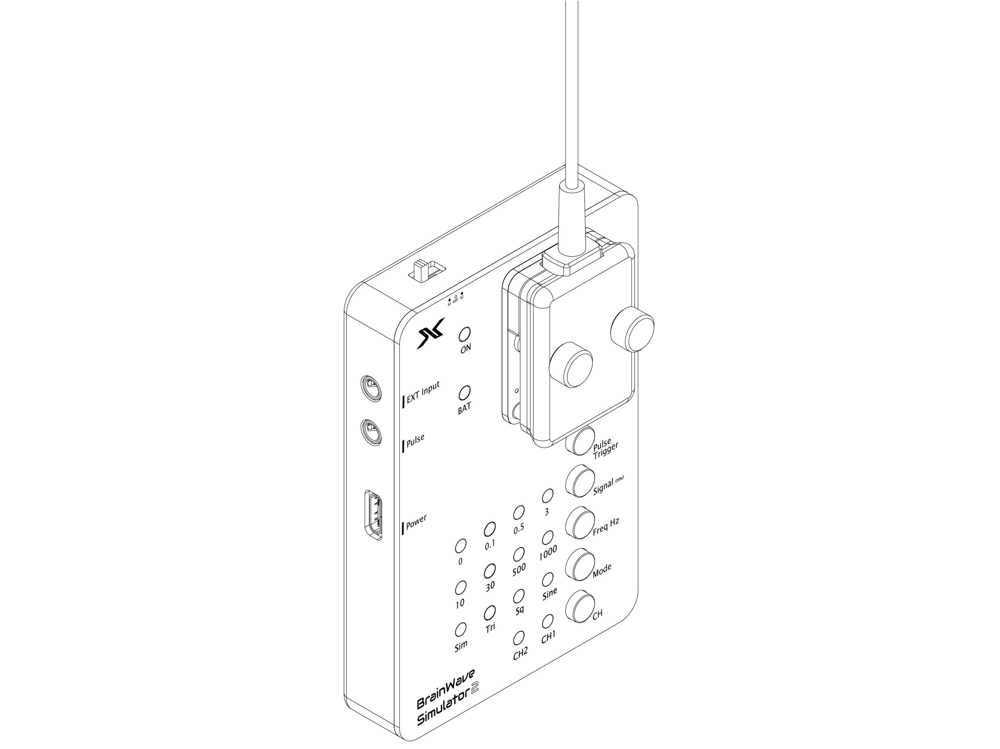
Components
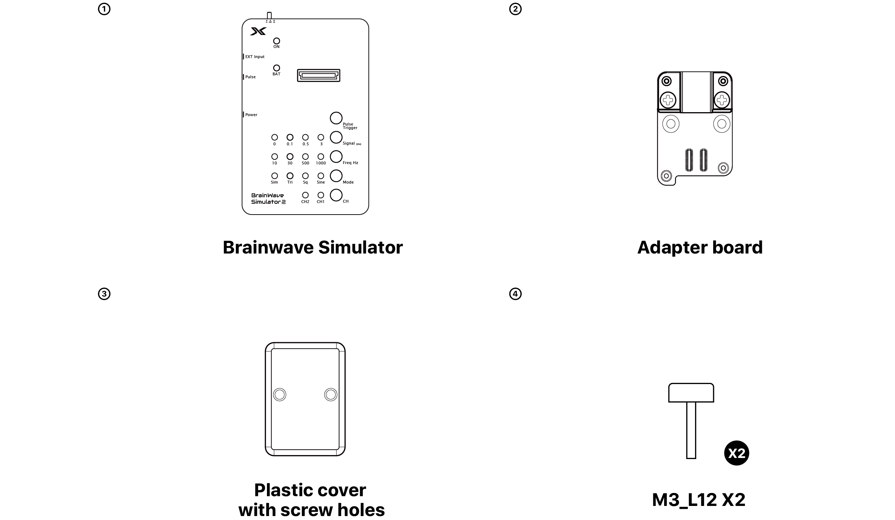
Dimension And Weight
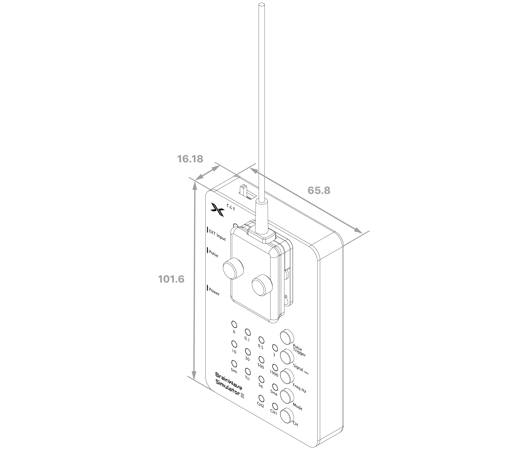
Weight ~260g
unit: mm
Key Features
Purpose-Built for Validating Neural Acquisition Pipelines
- Compatible with KonteX X-Headstages and other headstage systems
- Enables full pipeline testing using electrodes in PBS
Dual-Channel, Fully Programmable Signal Output
- Two independent output channels, each configurable with discrete amplitude and frequency settings
- Enhanced signal source architecture: selectable onboard signal generator or external source
- Amplitude options:
- Onboard waveform mode
3mV, 0.5mV, 0.1mV, or 0mV(mute) to accommodate a wide range of headstage sensitivity requirements.
- External signal mode
Divide external signal by: 1,000, 6,000, 30,000, and 0V(off)
- Frequency options:
- Onboard waveform mode:
1000 Hz, 500 Hz, 30 Hz, 10 Hz selected for common neural signal validation bandwidths.
- External signal mode:
Integrate filter circuit for common neural signal frequency range from 75Hz to 5KHz.
- Independent channel configuration ensures channel-isolated testing and headstage characterization.
- While signals outside this bandwidth can still be processed, they may show reduced amplitude or increased distortion.
Multiple Waveform Profiles for Comprehensive Testing
- Sine wave: For baseline gain and frequency response measurements.
- Square wave: For slew rate and transient response testing.
- Triangle wave: For linearity and symmetry verification.
- Simulation (Sim) mode: Synthetic waveform featuring a parameter-adjustable carrier with randomized spike patterns designed to approximate biological neural signals for realistic validation.
Integrated TTL Synchronization Output
- 3.3 V logic-level pulse output operates in a push (High) and release (Low) manner.
- Standard 3.5 mm to BNC cable interface for straightforward connection to downstream acquisition or stimulation devices.
- Ideal for time-locking signal generation to data collection or closed-loop feedback systems.
Battery-Powered Low-Noise Operation
- Internal rechargeable Li-ion battery delivers approximately 12 hours of continuous use on a full charge.
- Charging via USB-C takes 2.5 hours and does not require additional configuration.
Device Overview
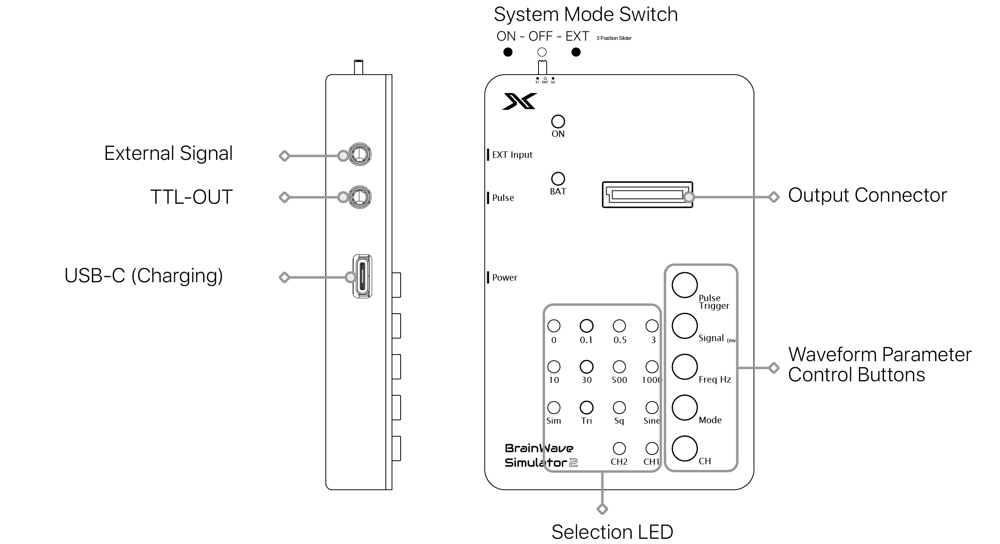
Side view Front view
LED Indicators
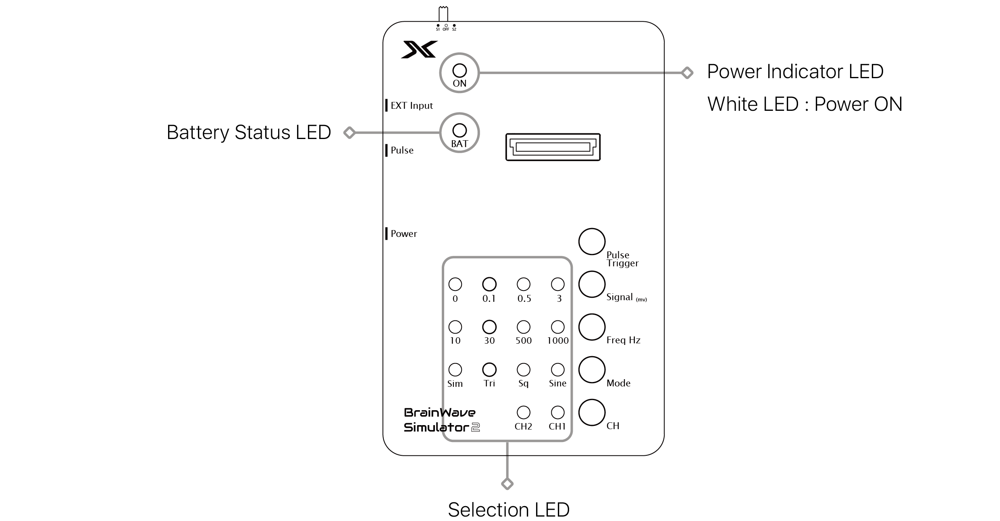
Power Indicator LED
- Confirms that the BrainWave Simulator is powered on and operating.
- Provides immediate visual feedback that the device is active.
Battery Status LED
- While charging: The indicator light flashes red, indicating that the internal battery is recharging.
- Low battery: The indicator light is solid red, alerting the user to recharge the device to maintain uninterrupted operation.
- See below for a full explanation of the LED status.
Testing the Headstage
Attach the X-Headstage™
1. Align the Connectors
Carefully align the connectors. When the interface board features an alignment arrow, orient the X-Headstage™ so the micro-HDMI connector matches the arrow's direction.2. Press Down Firmly
Carefully align the connectors. When the interface board features an alignment arrow, orient the X-Headstage™ so the micro-HDMI connector matches the arrow's direction.3. Connect the Micro-HDMI Cable
3A. If the X-Headstage™ is attached to a probe adapter designed with a locking mechanism. Secure the connection by locking the screws before plugging in the Micro-HDMI cable.
3B. Insert the cable while applying even pressure to both the X-Headstage™ and the accessory.This minimizes torque to the miniature board-to-board connectors.
4. Install the Headstage Stabilization Adapter
4A: Attach and secure the Headstage Stabilization Adapter by tightening the thumb screws.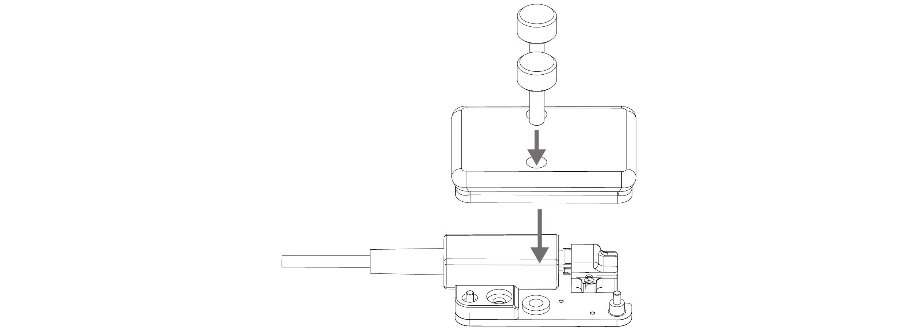
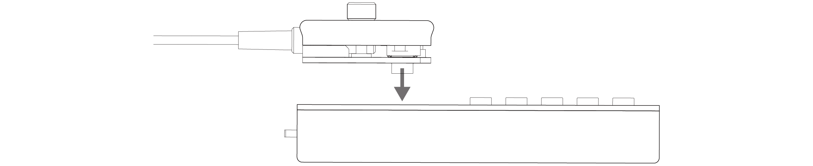
Detach the X-Headstage™
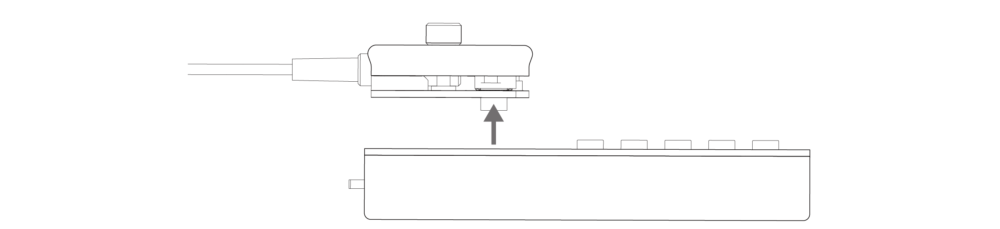
1. Unscrew the thumbscrews to remove the Headstage Stabilization Adapter
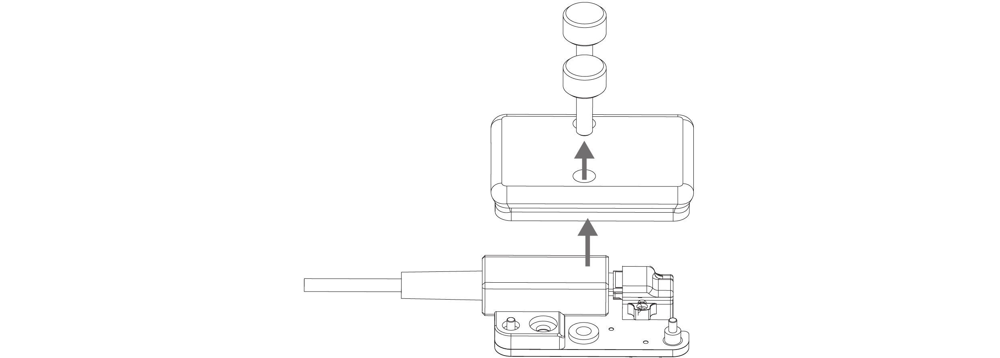
2. Disconnect the Micro-HDMI Cable
While holding the X-Headstage™ and adapter firmly, gently pull the cable straight back — avoid twisting or lateral force.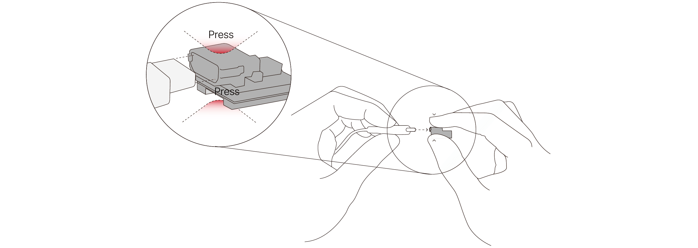
3. Use the designated XHS tool (removal tool) for detachment
Aim the tool tip from the top or bottom, if accessible.The XHS tool is purpose-built for X-Headstage™, featuring a single tip for X3-series and a dual tip for X6-series models. Each tip is precision-polished to minimize the risk of damage to PCB surfaces.
4. Release and Catch the X-Headstage™
Insert the tool tip at a slight angle into the gap between the X-Headstage™ and its accessory.The headstage should release easily with minimal applied force.
5. Optional Accessory: Cycle Extender or Remapper
Users may consider using this sacrificial interface adapter to reduce wear on the X-Headstage connector from repeated connection cycles and extend its operational lifespan.Configuring Test Waveforms
1. Power On
- Turn on the BrainWave Simulator by sliding the System Mode Switch to ON.
- In Onboard waveform mode, the device outputs a 3 mV, 1 kHz sine wave to all channels by default.
- In External signal mode, the device configure on divide 1,000 by default.
⚠ IMPORTANT : Do not using the device while charging, as this may cause ground coupling and increase measurement noise.
2. Output Waveform Adjustment
The onboard signal generator is capable of producing two independent waveforms—CH1 and CH2—which are alternately assigned across all headstage input channels.- Use the CH button to toggle between CH1 and CH2 for configuration.
- Adjust the parameters as required using the corresponding control knobs or software interface.
- Amplitude (Amp mV): 3 mV, 500 μV, 100 μV, 0 (off)
- Frequency (Freq Hz): 1000, 500, 30, 10
- Waveform Type (Mode): Sine (Sine), Square (Sq), Triangle (Tri)
- Amplitude (Amp mV): 3 mV, 500 μV, 100 μV, 0 (off)
- Frequency (Freq Hz): 1000, 500, 30, 10
3. Testing with External Signal Source
The BrainWave Simulator accepts external test signal (maximum voltage 2Vrms) via the 3.5 mm stereo jack (e.g. from a PC) and attenuates the signal to appropriate level for headstage or neural probe testing.- Sliding the ON/OFF switch to the right.
- External signal can be attenuated by: -1000 (3mV LED)
- Upon starup, the device is /1000 by default.
- Playing an audio signal on a device enables the BrainWave Simulator to simultaneously generate the corresponding analog output waveform.
- Once the headstage is attached on the BrainWave Simulator and connected to XDAQ, the waveform can be directly recorded using the acquisition software.
-6000 (0.5mV LED)
-30000 (0.1mV LED)
-∞ (muted output: 0mV LED)
⚠ IMPORTANT : The peak to peak limited range of the external input should remain below 2Vrms.
Exceeding this level may cause distortion or permanent damage to the input circuitry.
For optimal performance, it is recommended to use the headphone output jack of a standard computer as the signal source.
Testing with Electrode and Headstage
Evaluates electrode or probe performance and system functionality in saline using the BrainWave Simulator before actual recordings.
1. Immerse the in-house electrode or Neuropixels probe in the saline bath and connect its headstage to XDAQ.
2. Short the GND/REF of the electrode or Neuropixels and connect them to the GND terminal of the BrainWave Simulator using the saline test adapter with the connector left floating in the air.
3. Immerse the signal electrode from the BrainWave Simulator output channel (CH1 or CH2) into the saline bath to deliver the simulated signal.
4. Adjust the BrainWave Simulator output parameters and observe the signal in the acquisition software. The displayed waveform should change accordingly to the simulator settings.
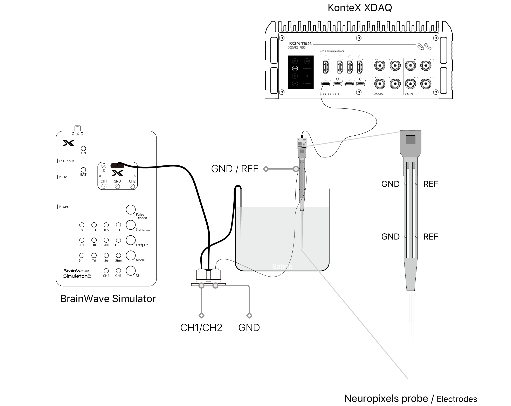
⚠ IMPORTANT : Confirm all connections are correct while applying the signal.
Ensure a proper grounding and shielding environment to reduce noise and maintain signal stability.
Generating a Digital Pulse
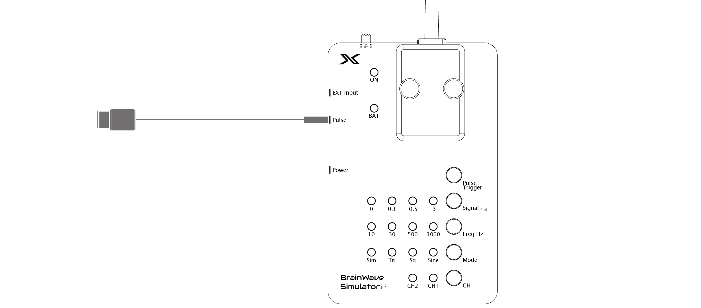
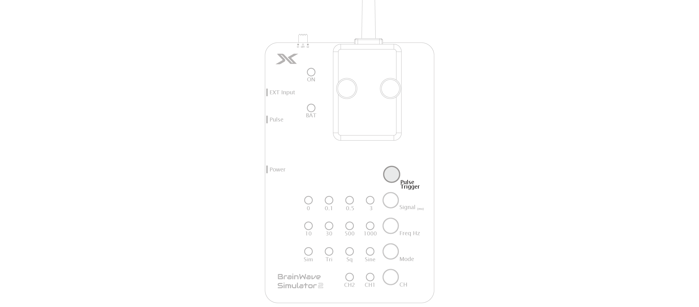
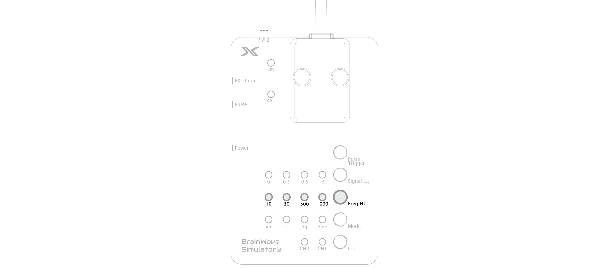
Connector Specification & Pinout
Version 2
- Main Connector: 40P 0.8mm Board to Board Mezzanine Connector.
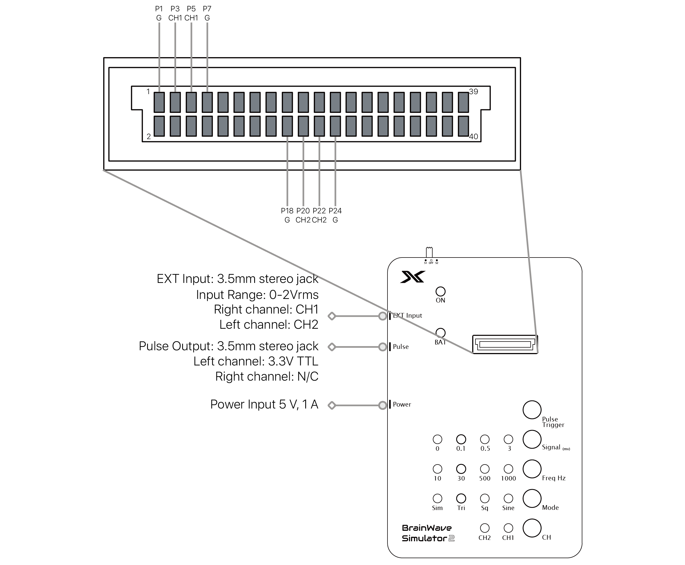
Compatible Accessory
X-Headstage Stabilization Adapter for X3 Headstage (SKU: Adpt-BWS-X3):
- This is the default adapter shipped with the Brainwave Simulator.
X-Headstage Stabilization Adapter for X6 Headstage (SKU: Adpt-BWS-X6):
- Use this adapter to use with the X6 headstages.
3.5mm plug to BNC patch cord (SKU: ACC-0007):
- Use this patch cord to send a test digital pulse to an instrument.
X-Headstage Remove Tool (SKU: XHS-Tool):
- Headstage removal tool.
DDS V1.0 to V2 Adapter (SKU: ACC-0009):
- Use this adapter with the v1.0 Brainwave Simulator to use the X3 or X6 Stabilization Adapter.
DDS V1.1 to V2 Adapter (SKU: ACC-0010):
- Use this adapter with the v1.1 Brainwave Simulator to use the X3 or X6 Stabilization Adapter.
Adapters to other headstages:
- Contact us for customization or use reference Eagle design to modify for your own.